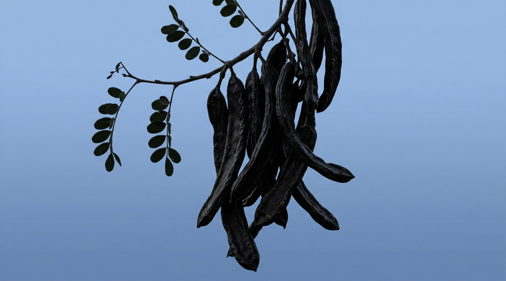

V1 — the annotated pod (full-bleed diagram, hero language)

First things first
What is carob, actually?
A sweet pod that grows in the warm Australian sun. Not a bean, no roasting tricks, no bitterness to hide. We slow-roast and mill it with cacao butter, and that is the whole recipe.
The full carob story01The pod
Sun-ripened, naturally sweet pulp.02Zero caffeine
Gentle by nature, any hour.03Slow-roasted
Then milled with cacao butter.04Nothing added
That is the whole recipe.V2 — from pod to bar (interactive steps, gallery stage)
First things first
From pod
From pod
to bar.
Carob is a sweet pod from the warm Australian sun. Four steps, no shortcuts, nothing added.
01The podSun-ripened and naturally sweet.
02The roastSlow, low and deep.
03The blendMilled with cacao butter, nothing else.
04The barHand-poured in Brunswick Heads.


01 · The pod
V3 — refined editorial split (current layout, luxury type + pod photo)
First things first
What is carob, actually?
A sweet pod that grows in the warm Australian sun. Not a bean, no roasting tricks, no bitterness to hide. We slow-roast and mill it with cacao butter, and that is the whole recipe.
A pod, not a beanNaturally sweetZero caffeineNothing added
The full carob story
